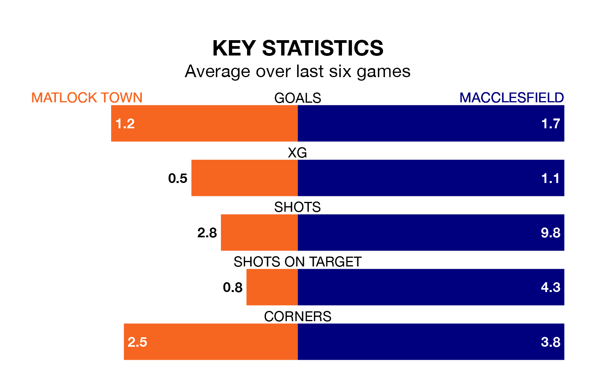

Matlock Town host Macclesfield on Tuesday at the DCJ Group Insurance Arena in Northern Premier League.
In their last league match, on December 30, Matlock lost to Stafford Rangers 3-1 at home.
Macclesfield also lost, 2-1 at home against Lancaster City on Saturday.
With 49 goals in 24 games so far this season, Macclesfield are scoring more than average in the league with 2.0 goals per game. And they are conceding fewer than average, letting in 28 goals at a rate of 1.2 per game.
Matlock are also above average scorers, with 1.9 goals per game, compared to a league average of 1.6. They have also conceded 1.9 goals per game.
The away side are fifth in the table after 24 games, of which they have won 12 and drawn five, earning 41 points.
Town are eight places behind Macclesfield in 13th, with 10 wins and four draws putting them on 34 points.
The hosts are in mixed form in Northern Premier League, with two wins and a draw from their last six games.
With two wins and two draws over that period, Macclesfield's form is slightly better – they have taken eight points from 18, compared to Matlock's seven.
Updated: 15:34, 08/01/24